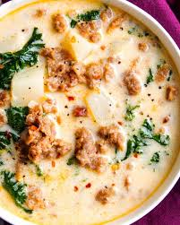

Home
Zuppa Toscana

Description
Zuppa Toscana is a delicious soup, unmatched by any other. The spicy italian sausage and kale add texture and flavors that enhance everything about this soup
Ingredients
- 1 pound of bulk mild italian sausage
- 1 ¼ teaspoons of crushed red pepper flakes
- 4 slices of bacon, cut into ½-inch pieces
- 1 large onion, diced
- 1 tablespoon of minced garlic
- 5, 13.75ounce cans of chicken broth
- 6 medium potatoes, thinly sliced
- 1 cup of heavy cream
- 1 bunch of fresh spinach, stems removed
Directions
- In a Dutch Oven or similar, cook italian sausage over medium-high heat until brown and crumbly. Roughly 10-15 minutes. Add red pepper flakes, drain and set aside.
- In the same pan, cook bacon over medium-high heat until crisp.
- Drain all but a few tablespoons of fat from pan. Add onions and garlic, stirring occasionally until the onions are translucent.
- Add chicken broth and bring to a boil over high heat
- Turn heat down to a simmer, add chopped potatoes and simmer until tender, roughly 20 minutes
- Reduce heat to medium; stir in cream, cook sausage, and spinach.
- Cook, stirring occasionally until the spinach has wilted. Serve!